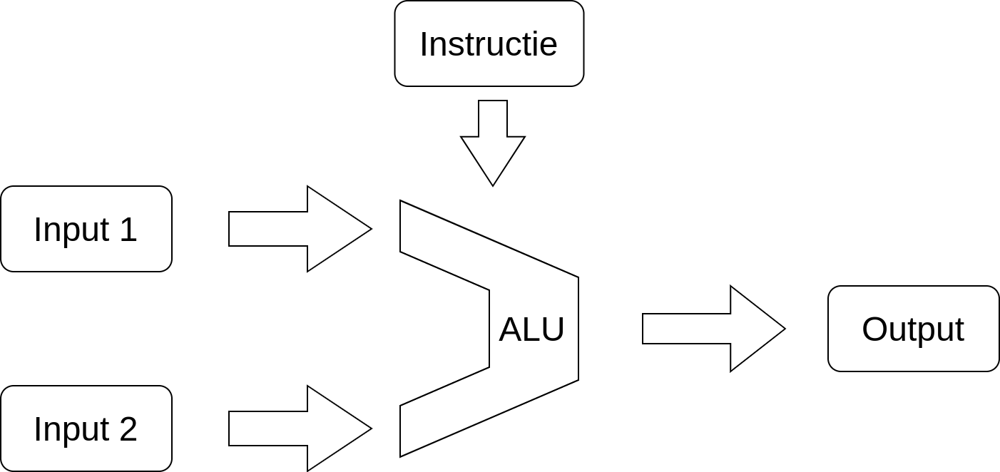

Het doel van dit labo is om uiteindelijk een werkende microprocessor te maken, ook al is het in een simpele vorm. Het doel is om de hack processor te maken van de cursus nand2tetris. In dit OPO gaan we de beschrijving uiteraard wel maken in VHDL.
Eén van de componenten die in iedere processor zit is een Arithmetic Logic Unit (ALU). Een ALU neemt 2 (of 1) input(s) en voert hier een bepaalde instructie mee uit. Deze instructie kan iets logisch zijn zoals AND, OR, XOR,.. of iets wiskundig zoals plus of min. 
De ALU die gebruikt wordt in de hack computer biedt de mogelijkheid om 18 verschillende instructies uit te voeren. De operatie die uitgevoerd wordt, wordt omgeschreven als f(x,y).
| f(x,y) = | Omschrijving |
|---|---|
| x | Het resultaat is altijd x |
| y | Het resultaat is altijd y |
| x+1 | Het resultaat is x+1 |
| y+1 | Het resultaat is y+1 |
| x-1 | Het resultaat is x-1 |
| y-1 | Het resultaat is y-1 |
| x+y | Het resultaat is de som van x en y |
| x-y | Het resultaat is het verschil van x en y |
| y-x | Het resultaat is het verschil van y en x |
| f(x,y) = | Omschrijving |
|---|---|
| 0 | Het resultaat is altijd 0 |
| 1 | Het resultaat is altijd 1 |
| -1 | Het resultaat is altijd -1 |
| !x | Het resultaat is de inverse van x |
| !y | Het resultaat is de inverse van y |
| -x | Het resultaat is het negatieve van x |
| -y | Het resultaat is het negatieve van y |
| x&y | Het resultaat is x AND y |
| x|y | Het resultaat is x OR y |